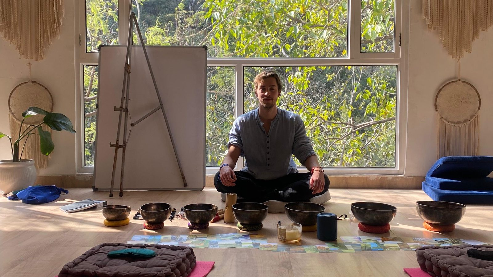

Sessions & Angebote
Die meisten Angebote hier, von Connected Breath über Yoga und Pranayama bis Meditation, finden online oder vor Ort statt, je nachdem, was besser zu dir passt. Ein paar Angebote, allen voran Rebirthing Atemarbeit, finden nur vor Ort statt, damit ich dich bei den intensiveren Praktiken direkt halten und begleiten kann. Alles hier unten funktioniert für absolute Anfänger genauso wie für erfahrene Praktizierende, ich weise an den wenigen Stellen darauf hin, wo etwas Erfahrung hilft. Unsicher, was passt? Starte mit einem kostenlosen Gespräch, dann finden wir es gemeinsam heraus.
Die Preise unten sind eine allgemeine Orientierung in Euro und können je nachdem, wo ich mich gerade befinde, etwas variieren. Wenn die Kosten ein Thema sind, frag einfach, wir finden eine Lösung.
Rebirthing Atemarbeit
Eine längere, intensivere Atemarbeit Reise für tieferes Loslassen und Verarbeiten. Aus Sicherheitsgründen auf 3 bis 4 Personen pro Session begrenzt. Weil diese Arbeit so viel aufbringen kann, findet sie ausschließlich vor Ort statt, nie online, damit du durchgehend direkt gehalten und begleitet wirst. Du kannst sie als Einzelsession buchen, als kurze Reihe von zwei oder drei Sessions, oder in die vollständige Zehn-Sessions-Transformationsreihe weiter unten einsteigen, wie es gerade zu dir passt. Keine Vorerfahrung in Atemarbeit ist nötig, um zu starten, egal ob es deine erste Session ist oder deine zehnte.
1 Session
Eine vollständige Rebirthing Atemarbeit Session für sich, ganz ohne Verpflichtung, mehr zu buchen.
2 Sessions
Eine kurze Zweierreihe für etwas mehr Tiefe als eine Einzelsession, vollständig für sich.
3 Sessions
Ein kurzer Bogen aus drei Sessions, der dem Prozess erlaubt, sich noch etwas weiter aufzubauen, in sich vollständig.
Vor deiner Session
- 1 bis 2 Stunden vorher nichts mehr essen.
- Mindestens 2 Tage vorher auf Alkohol und Freizeitdrogen verzichten.
Wann das nicht gut passt
Diese Arbeit beinhaltet bewusstes, intensives Atmen und ist deshalb nicht für jeden geeignet. Sag mir bitte in unserem kostenlosen Gespräch, wenn einer der folgenden Punkte auf dich zutrifft, damit wir gemeinsam entscheiden können, ob wir fortfahren, die Herangehensweise anpassen oder etwas Sanfteres wählen:
- Schwangerschaft
- Herz-Kreislauf-Erkrankungen: Bluthochdruck, Herzerkrankungen, Aneurysma oder eine kürzliche Herzoperation
- Epilepsie oder andere Anfallsleiden
- Glaukom, Netzhautablösung oder eine kürzliche Augenoperation
- Schweres Asthma oder andere Atemwegserkrankungen
- Eine kürzliche Operation, eine ernsthafte körperliche Verletzung oder Osteoporose
- Psychosen, bipolare Störung oder stark unverarbeitete Traumata, besonders ohne ein unterstützendes Umfeld
- Jede Medikation, die Herzfrequenz, Blutdruck oder die Psyche beeinflusst
Wenn eines davon zutrifft, schließt das die Arbeit nicht automatisch aus, es bedeutet nur, dass wir behutsamer vorgehen, die Herangehensweise anpassen oder vorher mit deiner Ärztin oder deinem Arzt sprechen. Wenn du unsicher bist, frag einfach.
Bitte beachten
Rebirthing Atemarbeit und die anderen hier angebotenen Praktiken ersetzen keine medizinische oder psychotherapeutische Behandlung. Ich bin kein Arzt, keine Therapeutin und keine medizinische Fachkraft, und nichts auf dieser Seite ist eine medizinische Empfehlung. Mit der Buchung einer Session bestätigst du, dass du die obigen Informationen gelesen hast, relevante gesundheitliche Vorerkrankungen vorher mitgeteilt hast, und auf eigene Verantwortung teilnimmst.
Die Transformationsreihe
10 Sessions Rebirthing Atemarbeit
Rebirthing Atemarbeit war nie als Einzelerlebnis gedacht. Schon in den frühesten Lehren der Praxis galten zehn Sessions als empfohlenes Minimum, damit der Prozess genug Zeit und Vertrauen bekommt, um wirklich unter die Oberfläche zu gehen und etwas zu bewirken, das bleibt. Eine einzelne Session kann verändern, wie du dich für einen Tag fühlst. Eine Reihe verändert das Muster selbst, und die eigentliche Tiefe zeigt sich meist erst nach einigen Sessions. Das Ziel ist, dass du am Ende selbstständig mit deinem eigenen Atem arbeiten kannst, nicht, dass du immer wieder zu mir zurückkommen musst.
Diese Arbeit begegnet sich am besten persönlich vor Ort. Die körperliche Anwesenheit ermöglicht eine engere, feinfühligere Begleitung durch den Atem und ein Maß an Sicherheit und Verankerung, das sich über einen Bildschirm kaum vollständig herstellen lässt, besonders wenn die Sessions intensiver werden. Deshalb biete ich die vollständige Transformationsreihe ausschließlich vor Ort an, an Orten, die davon abhängen, wo ich mich gerade befinde oder hinreise. Melde dich, um die aktuelle Verfügbarkeit in deiner Nähe zu erfragen.
Je nachdem, was sich im Moment richtig anfühlt, bringe ich manchmal Aroma, Klang oder sanfte Körperarbeit mit in die Session ein, nie vorausgesetzt, nur wenn es sich für dich gut anfühlt. Das sind keine improvisierten Extras: Sie stammen aus meiner Ausbildung in Körperarbeit (Thai Yoga Techniken, Reflexzonenmassage, Moxa) und Klangheilung, also werden sie, wenn sie vorkommen, mit der gleichen Sorgfalt gehalten wie die Atemarbeit selbst. Du bestimmst jederzeit, was im Raum passiert.
Atemarbeit Grundlagen
Connected Breath Session
Eine sanfte, bewusste Verbindungsatmung Session. Als Einzelsession, in kleinen Gruppen oder in großen Gruppen, ein guter Einstieg, wenn du neu in der Atemarbeit bist, und genauso stimmig, wenn du sie schon seit Jahren praktizierst.
Nervensystem-Reset
Eine kurze, beruhigende Session, aufgebaut aus denselben Atemtechniken wie Pranayama, nur ohne Sanskrit-Namen oder spirituellen Rahmen: langsame, verlängerte Ausatmung, sanfte Atempausen und Klang (Summen oder Tönen), um ein überreiztes oder angespanntes Nervensystem schnell zu beruhigen. Gut für alle, die Entlastung wollen, kein Ritual.
Pranayama
Traditionelle Atemübungen, um das Nervensystem zu beruhigen, Fokus aufzubauen und den Körper auf Meditation oder Yoga vorzubereiten. Als Einzelsession oder in Gruppen jeder Größe. Keine Vorerfahrung nötig.

Yoga & Meditation
Hatha Yoga
Langsame, bewusste Haltungen für Kraft und Stabilität, ein guter Einstieg, wenn du neu im Yoga bist.
Yin Yoga
Lang gehaltene, passive Posen für das Bindegewebe und tiefe Stille, sanft genug für absolute Anfänger.
Ashtanga
Eine strukturierte, fließende Praxis für mehr Bewegung und Wärme. Ich unterrichte einen sanften Zugang zur Primary Series, nur vor Ort, damit ich dich eng begleiten kann. Am besten geeignet, wenn du noch relativ neu im Ashtanga bist, statt schon tief in deiner eigenen Praxis zu stecken.
Yoga Nidra
Eine angeleitete Liegemeditation für tiefe Entspannung, der "yogische Schlaf", keine Yoga oder Meditationserfahrung nötig.
Meditation
Einfache, angeleitete Sitzpraxis für Präsenz und Ruhe, offen für absolute Anfänger.
Klangheilung
Klangschalen Klangheilung, die man im Körper genauso spürt wie hört, deshalb nur vor Ort, sobald die Schalen wieder griffbereit sind.
Unsicher, was passt?
Buche ein kostenloses Gespräch, dann finden wir gemeinsam die passende Session für dich.
Kostenloses Gespräch